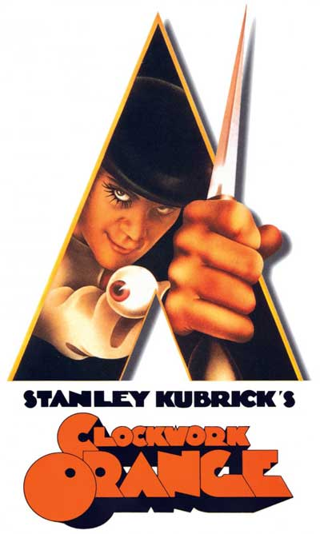
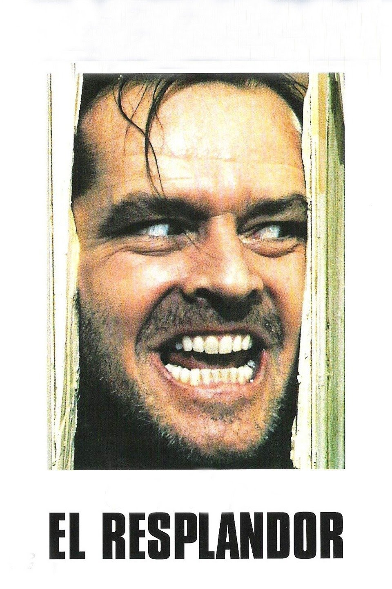
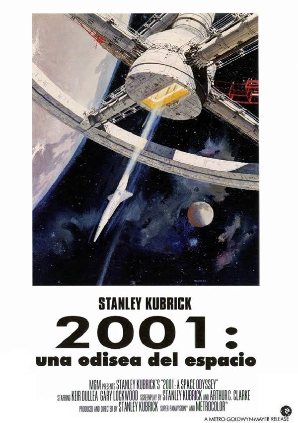

Stanley Kubrick Peliculas
Inicio
Historia
- A clockwork Orange
-

Un criminal en la Inglaterra del futuro pasa una serie de procesos experimentales para corregir sus impulsos violentos.
| Pelicula |
Calificaciones de la critica |
| A clockwork Orange |
9.4 |
9.1 |
8.9 |
- El resplandor
-

Jack Torrance se convierte en cuidador de invierno en el Hotel Overlook, en Colorado, con la esperanza de vencer su bloqueo con la escritura.
| Pelicula |
Calificaciones de la critica |
| El resplandor |
9.4 |
10 |
9.2 |
- 2001 Odisea espacial
-

La supercomputadora HAL 9000 guía a un equipo de tres astronautas en un viaje en el que buscan descubrir los orígenes de la humanidad.
| Pelicula |
Calificaciones de la critica |
| 2001 Odisea espacial |
9.4 |
9.8 |
9.9 |